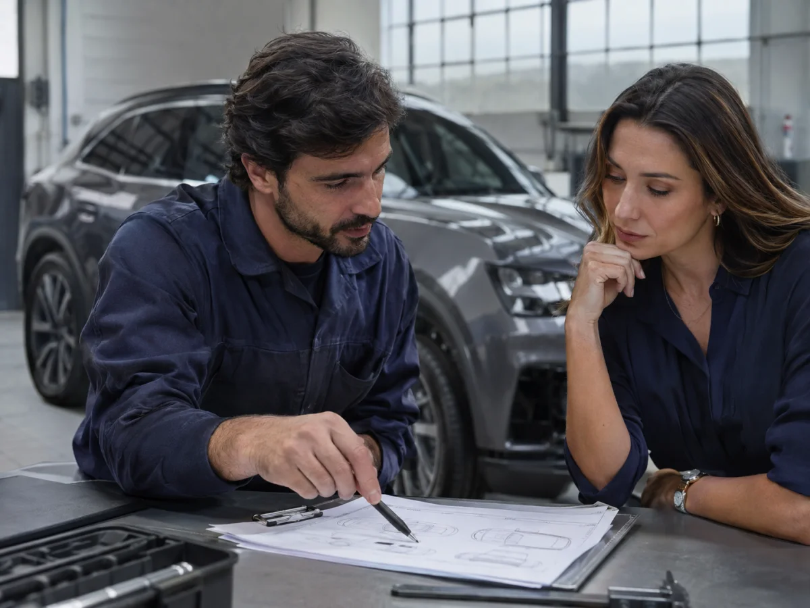
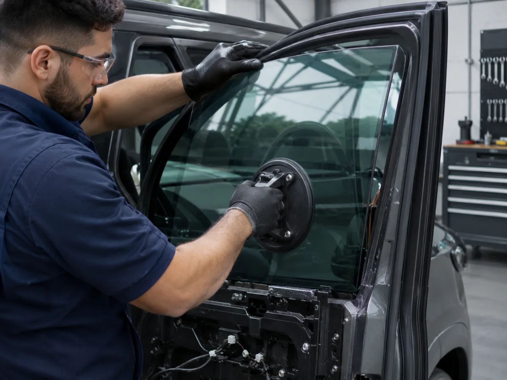
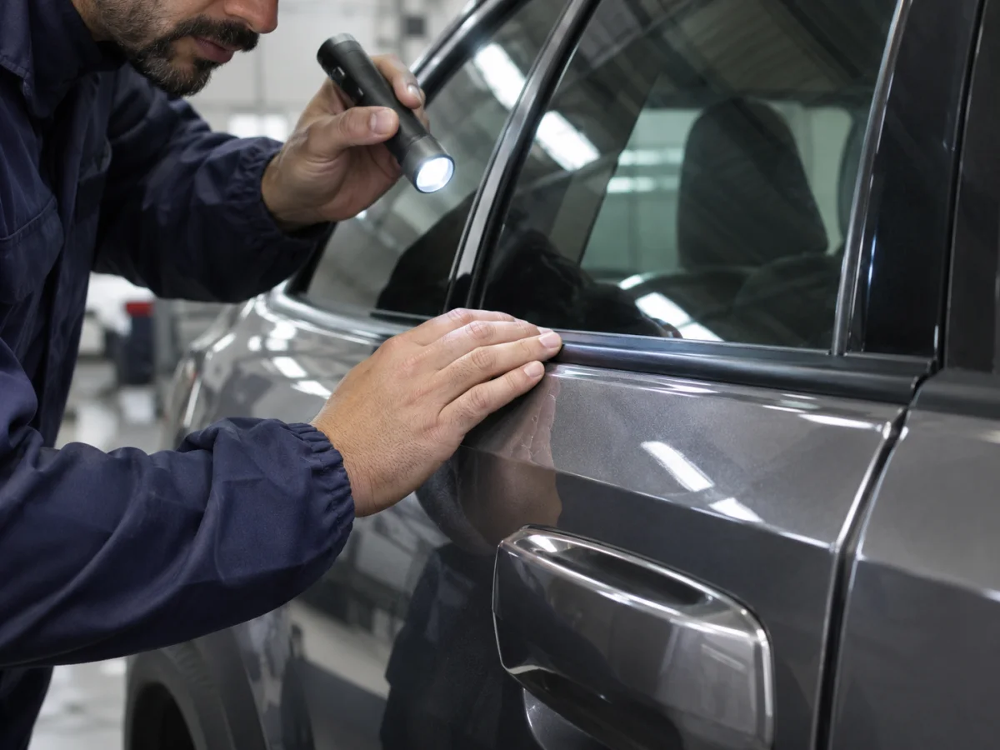

Cada detalhe importa.
Explore a proteção.
Gire o Cayenne e explore cada detalhe.
Escolha uma área para conhecer a proteção.
Carregando os ângulos…
Arraste para girar · Escolha uma área abaixo para aproximar
Estudo visual com imagens geradas por IA. A blindagem é definida para cada projeto.
Sobre esta visualização
O giro combina 12 imagens do Cayenne geradas a partir da mesma referência. Podem existir pequenas variações entre os ângulos; não é um modelo 3D. Exterior e componentes são ilustrativos e não representam um projeto de engenharia da Hi-Tech. Conteúdo baseado na tecnologia da Hi-Tech.
Da primeira conversa à entrega.
Conheça as quatro etapas do seu projeto de blindagem, do planejamento à entrega das chaves.



Conhecer e planejar.
Avaliamos o veículo, definimos a proposta e orientamos a documentação para iniciar o projeto.
Aplicar e montar.
Desmontagem, instalação dos materiais balísticos e remontagem cuidadosa dos acabamentos.
Conferir o conjunto.
Inspeções de funcionamento, acabamento, ruídos e estanqueidade antes da liberação.
Entregar e orientar.
Você recebe as condições de garantia, os cuidados de uso e o plano de revisões do seu projeto.
Antes de blindar, entenda o projeto.
Materiais, prazo e condições de uso: reunimos os pontos que merecem atenção na sua escolha.
Conhecer homologaçõesQuais materiais são utilizados?
A Hi-Tech utiliza mantas de aramida, vidros balísticos e componentes de aço nos locais definidos pelo projeto. Também oferece aplicações com Tensylon, um material diferente da aramida. A equipe confirma a composição e a disponibilidade para o seu modelo.
Como são protegidas as uniões?
Aço e sobreposições reforçam pontos específicos e os encontros entre materiais. O overlap é a sobreposição entre a proteção dos vidros e das áreas opacas. Colunas, maçanetas, fechaduras, painel frontal e tanque são considerados conforme a aplicação técnica.
O que muda nos recursos do veículo?
Teto solar, sensores, recursos eletrônicos e mecanismos dos vidros passam por avaliação específica. A equipe também orienta sobre intercomunicadores e opções para pneus e rodas, conforme a compatibilidade e as condições de uso do veículo.
Quais verificações são feitas?
A inspeção inclui torque das rodas e fluidos, sistemas elétricos e eletrônicos, teste de rodagem e estanqueidade. Acabamentos, borrachas e alinhamento das portas também são conferidos, seguidos de limpeza para a entrega.
Quanto tempo leva a blindagem?
A referência média é de 30 dias após a entrada do veículo na fábrica. O desenvolvimento dos vidros, as especificações do modelo e a documentação podem alterar esse período. O prazo do seu projeto é confirmado na proposta.
Como funcionam garantia e revisões?
Materiais balísticos, vidros e serviços podem ter coberturas diferentes. Os prazos e as condições são detalhados na proposta e nos documentos de entrega. Siga o plano de revisões recebido com o veículo e mantenha o acompanhamento da assistência.
Vamos falar sobre o seu carro?
Conte a marca, o modelo e o ano. Nossa equipe orienta as opções de blindagem e os próximos passos.